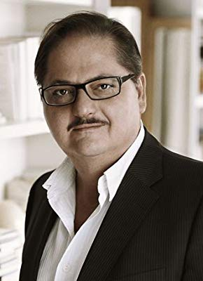

#6630 Jeder stirbt für sich allein
Alternativ: Alone in Berlin

 IMDB-Wertung: 6.3 / 10
IMDB-Wertung: 6.3 / 10  Metascore: 0
Metascore: 0 
Berlin, 1940. Working class couple Otto and Anna Quangel receive the news that their only son has lost his life in the battlefield and decide to resist the Nazi regime in their very own way. Soon the Gestapo is hunting "the threat".
Jahr: 2016
Dauer: 98 Minuten
FSK:
Land: England Studio: X Verleih AGTonspuren: DD5.1 - ,
Untertitel:
Auflösung: 1080p (1920x808) Größe: 7475 MB
Genre: Drama
Regisseur:  Vincent Perez
Vincent Perez
Drehbuch: Achim von Borries
Soundtrack:
Darsteller:
 Daniel Brühl als Escherich
Daniel Brühl als Escherich Emma Thompson als Anna Quangel
Emma Thompson als Anna Quangel Brendan Gleeson als Otto Quangel
Brendan Gleeson als Otto Quangel- Mikael Persbrandt als SS Officer Prall
 Louis Hofmann als Hans Quangel
Louis Hofmann als Hans Quangel Katharina Schüttler als Claire Gehrich
Katharina Schüttler als Claire Gehrich Godehard Giese als Colonel Krüger
Godehard Giese als Colonel Krüger Uwe Preuss als Persicke
Uwe Preuss als Persicke- Joshua Grothe als August Persicke
- Rafael Gareisen als Herbert Wegner
 Chris Theisinger als SS / SD Sturmführer
Chris Theisinger als SS / SD Sturmführer Rainer Reiners als Salesman Franz Kanz
Rainer Reiners als Salesman Franz Kanz Hildegard Schroedter als Ida Kuhn
Hildegard Schroedter als Ida Kuhn- Luisa Wolf als Secretary
- Jacob Matschenz als Dietrich Necker
- Lars Rudolph als Enno Kluge
- Ernst Stötzner als Dptm. Head Walter
-  Jürgen Tarrach als Caretaker Richard Schopf
- Rainer Egger als Emil Barkhausen
 Holger Handtke als Dollfuss
Holger Handtke als Dollfuss- Monique Chaumette als Frau Rosenthal
- Katharina Abt als Flower Shop lady I. Schneider
- Michael Scheel als Judge Frank Schwartz
- Hans Martin Stier als Man at Bandsaw Arnold Vogt
- Imogen Kogge als Frau Busch
- Katrin Pollitt als Eva Kluge
- Gisa Flake als Bertha
- Sanne Schnapp als Female Worker Helene Scholz
- Daniel Sträßer als Zott
- Irene Rindje als Miss Kleinschmidt
- Joshio Marlon als Kuno Barkhausen
- Fritz Roth als Clerk Max Winkler
- Farina Flebbe als BDM Girl Ursula Kraft
- Sammy Scheuritzel als Baldur Persicke
- Katharina Blaschke als Female guard Gertrud Schäfer
- Moritz Grove als Young Man who cuts finger
 Marko Dyrlich als Anselm Koch
Marko Dyrlich als Anselm Koch- Ingo Wimmer als Prison Guard
- Silvaine Faligant als Operator Luise Hofler
- Joachim Bißmeier als Herr Fromm
- Thomas Neumann als Party Rep. Ludwig Weber
- Stefan Schumann als Obersturmbannführer
- Thomas Bestvater als Colleague in Tram Karl Ziegler
- Dietmar Rüttiger als Policeman Josef Keller
- Emil von Schönfels als Newspaper Boy
- Andre Schmidt als Persicke's Brother
- Felix Koch-Rugor als Gestapo Officer
- Hans Piesbergen als Male worker Joachim Kessel
- Patrick Hastert als Schröder
- Christoph Glaubacker als Male Guard Werner Klein
Datei: X:\2016(G-M)\Jeder stirbt für sich allein (2016, FSK, 1920x808).mkv seit 27.07.2017
Festplatte: HD 2016(A-Z)
 Es gibt insgesamt 164 Filme in der Gruppe '2016(G-M)'
Es gibt insgesamt 164 Filme in der Gruppe '2016(G-M)'